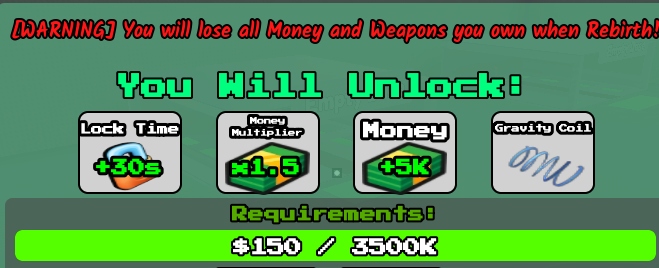
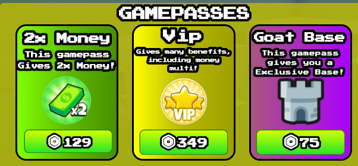

Créditos:
pouououjoia
pouououjoia
Prepare-se para o maior evento de
Blue Lock do Roblox!
Steal a Football Player é um jogo de futebol competitivo no Roblox.
Muitas novidades, modos de jogo únicos e eventos especiais estão sendo preparados para a comunidade.
Em breve: um grande Evento Blue Lock com desafios e prêmios exclusivos!
Participe do nosso Discord para acompanhar atualizações, ver sneak-peaks e garantir sua vaga nos eventos:


